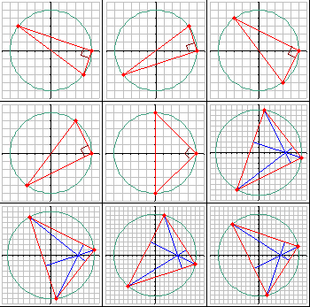

Consider all the triangles having:
There are nine such triangles having a perimeter $\le 50$.
Listed and shown in ascending order of their perimeter, they are:
| $A(-4, 3)$, $B(5, 0)$, $C(4, -3)$ $A(4, 3)$, $B(5, 0)$, $C(-4, -3)$ $A(-3, 4)$, $B(5, 0)$, $C(3, -4)$ $A(3, 4)$, $B(5, 0)$, $C(-3, -4)$ $A(0, 5)$, $B(5, 0)$, $C(0, -5)$ $A(1, 8)$, $B(8, -1)$, $C(-4, -7)$ $A(8, 1)$, $B(1, -8)$, $C(-4, 7)$ $A(2, 9)$, $B(9, -2)$, $C(-6, -7)$ $A(9, 2)$, $B(2, -9)$, $C(-6, 7)$ |
 |
The sum of their perimeters, rounded to four decimal places, is $291.0089$.
Find all such triangles with a perimeter $\le 10^5$.
Enter as your answer the sum of their perimeters rounded to four decimal places.
solve(max_limit=50) → ?solve(max_limit=100000) → ?solve(max_limit=1000000) → ?